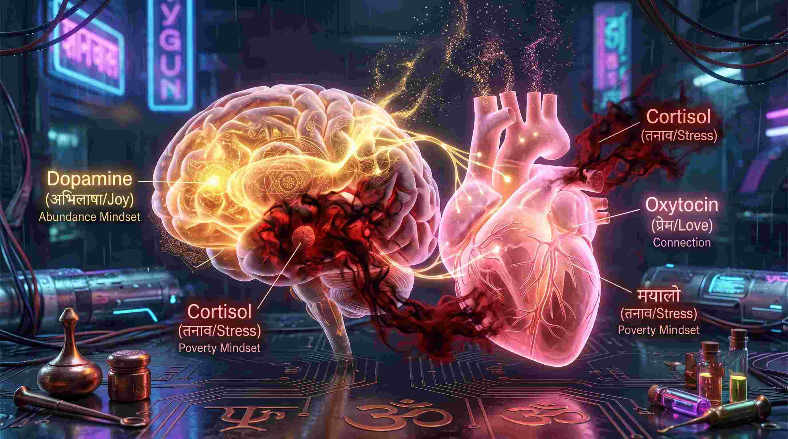
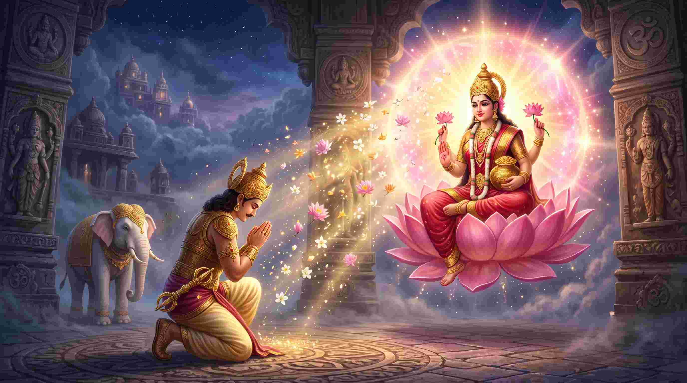

क्या आपने कभी सोचा है कि कुछ लोग लगातार तरक्की करते जाते हैं, जबकि कुछ लोग कितनी भी मेहनत कर लें, उनका बैंक अकाउंट हमेशा खाली रहता है? समाज इसे "किस्मत" कहता है। ज्योतिष में इसका संबंध कुंडली के धन भाव, शुक्र ग्रह और माँ लक्ष्मी की कृपा से जोड़ा जाता है।
वैदिक ज्योतिष में शुक्र (Venus) और महालक्ष्मी को धन, सुख-सुविधा और आकर्षण का केंद्र माना गया है। जब मन चिंता और अभाव के भाव से भरा रहता है, तो शास्त्र उसे 'अलक्ष्मी' का प्रभाव कहते हैं; भक्ति और कृतज्ञता उस भाव को बदलने का मार्ग है।
"जहाँ स्वच्छता, परिश्रम, कृतज्ञता और प्रेम होता है, वहीं माँ लक्ष्मी का वास माना गया है।"

2. इन्द्र कृत महालक्ष्मी अष्टकम: असीमित ऐश्वर्य का वैदिक सूत्र
पद्म पुराण में वर्णित यह स्तोत्र स्वयं देवराज इन्द्र ने तब गाया था, जब महर्षि दुर्वासा के श्राप के कारण उनका संपूर्ण स्वर्ग और ऐश्वर्य छिन गया था। इस अष्टकम (8 श्लोकों) के पाठ से माँ लक्ष्मी प्रसन्न हुईं और इन्द्र को उनका वैभव पुनः प्राप्त हुआ — ऐसी कथा है।
नमस्तेऽस्तु महामाये श्रीपीठे सुरपूजिते।
शङ्खचक्रगदाहस्ते महालक्ष्मि नमोऽस्तुते॥ १ ॥
अर्थ: हे महामाये! हे श्रीपीठ पर विराजमान और देवताओं द्वारा पूजित होने वाली देवी! जिनके हाथों में शंख, चक्र और गदा हैं, ऐसी हे महालक्ष्मी! आपको मेरा नमस्कार है।
नमस्ते गरुडारूढे कोलासुरभयङ्करि।
सर्वपापहरे देवि महालक्ष्मि नमोऽस्तुते॥ २ ॥
अर्थ: गरुड़ पर सवारी करने वाली और कोलासुर नामक असुर को भयभीत करने वाली देवी! सम्पूर्ण पापों को हरने वाली हे महालक्ष्मी! आपको मेरा नमस्कार है।
सर्वज्ञे सर्ववरदे सर्वदुष्टभयङ्करि।
सर्वदुःखहरे देवि महालक्ष्मि नमोऽस्तुते॥ ३ ॥
अर्थ: सब कुछ जानने वाली (सर्वज्ञे), सबको वरदान देने वाली और सभी दुष्टों को भयभीत करने वाली देवी! सम्पूर्ण दुखों को हरने वाली हे महालक्ष्मी! आपको मेरा नमस्कार है。
सिद्धिबुद्धिप्रदे देवि भुक्तिमुक्तिप्रदायिनि।
मन्त्रमूर्ते सदा देवि महालक्ष्मि नमोऽस्तुते॥ ४ ॥
अर्थ: सिद्धि और बुद्धि प्रदान करने वाली, तथा भोग (सांसारिक सुख) और मोक्ष दोनों देने वाली हे मंत्रमयी देवी! हे महालक्ष्मी! आपको सदा मेरा नमस्कार है।
आद्यन्तरहिते देवि आद्यशक्तिमहेश्वरि।
योगजे योगसम्भूते महालक्ष्मि नमोऽस्तुते॥ ५ ॥
अर्थ: जिनका न आदि (शुरुआत) है और न अंत, ऐसी हे आद्यशक्ति महेश्वरी! योग से प्रकट होने वाली और योग से ही उत्पन्न होने वाली हे महालक्ष्मी! आपको नमस्कार है।
स्थूलसूक्ष्ममहारौद्रे महाशक्तिमहोदरे।
महापापहरे देवि महालक्ष्मि नमोऽस्तुते॥ ६ ॥
अर्थ: जो स्थूल (विशाल) और सूक्ष्म दोनों रूपों में हैं, जो महारौद्र, महाशक्ति और महोदर रूप वाली हैं। बड़े-बड़े पापों का नाश करने वाली हे महालक्ष्मी! आपको नमस्कार है।
पद्मासनस्थिते देवि परब्रह्मस्वरूपिणि।
परमेशि जगन्मातर्महालक्ष्मि नमोऽस्तुते॥ ७ ॥
अर्थ: कमल के आसन पर विराजमान होने वाली, परब्रह्म स्वरूपा हे देवी! हे परमेश्वरी! हे जगत की माता महालक्ष्मी! आपको नमस्कार है।
श्वेताम्बरधरे देवि नानालङ्कारभूषिते।
जगत्स्थिते जगन्मातर्महालक्ष्मि नमोऽस्तुते॥ ८ ॥
अर्थ: श्वेत (सफेद) वस्त्र धारण करने वाली और अनेक प्रकार के आभूषणों से सजी हुई हे देवी! सम्पूर्ण जगत में व्याप्त हे जगन्माता महालक्ष्मी! आपको नमस्कार है।
महालक्ष्म्यष्टकं स्तोत्रं यः पठेद्भक्तिमान्नरः।
सर्वसिद्धिमवाप्नोति राज्यं प्राप्नोति सर्वदा॥ ९ ॥
फलश्रुति: जो भी भक्तिमान मनुष्य इस महालक्ष्मी अष्टक स्तोत्र का पाठ करता है, वह सभी सिद्धियों को प्राप्त करता है और सदा के लिए राज्य (ऐश्वर्य) को प्राप्त करता है।
एककाले पठेन्नित्यं महापापविनाशनम्।
द्विकालं यः पठेन्नित्यं धनधान्यसमन्वितः॥ १० ॥
त्रिकालं यः पठेन्नित्यं महाशत्रुविनाशनम्।
महालक्ष्मिर्भवेन्नित्यं प्रसन्ना वरदा शुभा॥ ११ ॥
अर्थ: जो प्रतिदिन एक समय इसका पाठ करता है, उसके बड़े-बड़े पाप नष्ट हो जाते हैं। जो प्रतिदिन दो समय (सुबह-शाम) इसका पाठ करता है, वह धन-धान्य से परिपूर्ण हो जाता है। जो प्रतिदिन तीन समय पाठ करता है, उसके बड़े से बड़े शत्रुओं का नाश होता है और उस पर महालक्ष्मी नित्य प्रसन्न होकर शुभ वरदान देती हैं।

3. लक्ष्मी बीज मंत्र
वैदिक मंत्रों में "श्रीं" (Shreem) लक्ष्मी का बीज मंत्र है। "ॐ श्रीं ह्रीं श्रीं कमले कमलालये प्रसीद प्रसीद श्रीं ह्रीं श्रीं ॐ महालक्ष्म्यै नमः॥" का श्रद्धा से जाप माँ लक्ष्मी की कृपा पाने का सरल उपाय माना जाता है।
4. वैभव प्राप्ति के लिए 40-दिन का 'महालक्ष्मी अनुष्ठान' (Action Plan)
यदि आप लगातार आर्थिक तंगी, कर्ज या व्यापार में घाटे से जूझ रहे हैं, तो प्रार्थना के साथ यह नियमबद्ध अनुष्ठान शुरू करें:
- शुक्रवार से शुरुआत: इस अनुष्ठान को शुक्ल पक्ष के शुक्रवार (Friday) से शुरू करें। शुक्रवार 'शुक्र' (Venus) का दिन है, जो विलासिता (Luxury) का ग्रह है।
- आसन और दिशा: गुलाबी या लाल रंग के आसन पर उत्तर (North - कुबेर की दिशा) की ओर मुख करके बैठें।
- दीपक (Lamp): गाय के शुद्ध घी का दीपक प्रज्वलित करें। पूजा में घी का दीपक शुभ और पवित्र माना गया है।
- पाठ की विधि: सबसे पहले 1 बार महालक्ष्मी अष्टकम पढ़ें, उसके बाद 1 बार लक्ष्मी चालीसा का सस्वर पाठ करें। अंत में 'कमलगट्टे' (Lotus Seeds) की माला से 108 बार "ॐ श्रीं ह्रीं श्रीं..." बीज मंत्र का जाप करें।
- सुगंध (Fragrance): गुलाब (Rose) या इत्र (Attar) का प्रयोग करें। सुगंधित वातावरण पूजा में मन को प्रसन्न और एकाग्र रखता है।
निष्कर्ष: अपनी "मानसिक दरिद्रता" को नष्ट करें
महालक्ष्मी भक्ति कोई जादू का चिराग नहीं है कि आसमान से पैसे गिरेंगे। यह मन से डर और अभाव का भाव हटाकर, मेहनत, ईमानदारी और कृतज्ञता के साथ आगे बढ़ने की प्रेरणा देती है — और यही माँ लक्ष्मी की सच्ची कृपा है।
लक्ष्मी चालीसा और अष्टकम का श्रद्धा से पाठ करें और साथ में ईमानदारी से परिश्रम करते रहें — यही माँ लक्ष्मी की कृपा पाने का सच्चा मार्ग है। "ॐ श्री महालक्ष्म्यै नमः"